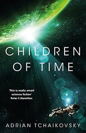

Children of Time

by Adrian Tchaikovsky (2015)
Lots of people love this, and it was jolly enough, but it just isn't for me. A couple of times I toyed with the idea of invoking my new policy of abandoning any book that isn't absolutely knocking my socks off - something I haven't previously been in the habit of.
It's unfair of me to compare one book with another, but partly, I was irked by featuring an alien planet of spiders, that being so reminiscent of Vernor Vinge's 1999 novel A Deepness in the Sky (and he can hardly be the first to play with that.)
To be fair, Tchaikovsky's spider civilization definitely exhibits more thought-out arachnid sensibilities, whereas Vinge's act more like a Dickensian family drama - "Button up warm, childlings!" "Yes, Daddy!". But Vinge was there first, and has such a high profile, being a sequel to a much-loved Hugo winner, that it casts a shadow on anything else following on the same path.
Partly, also, I've been spoiled by hard science fiction from people like Peter Watts - real scientists, who are devastatingly smart, and are not afraid to dazzle their readers with it, even if that makes it a little hard going at times. Something about Children of Time was just too easygoing for me.